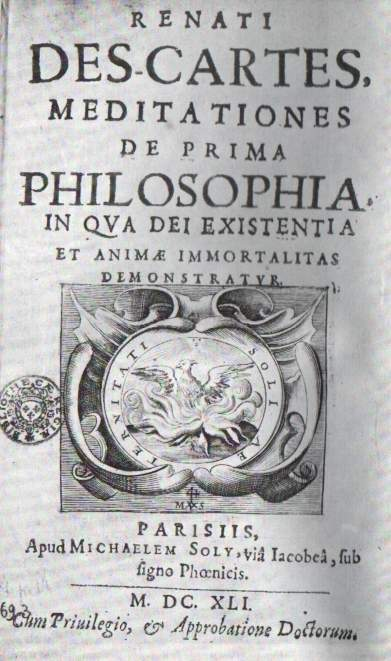

• Autor da frase "penso logo existo".
• Considerado como o criador do pensamento cartesiano, que deu origem à filosofia Moderna.
• Nasceu em 31 de março de 1596, na cidade de Lá Haye, atualmente Descartes, em França.
• Em 1606 entrou para o o colégio jesuíta de Lá Flèche, o de estudou gramática, retórica, dialética, matemática e filosofia escolástica, que consistia num misto dos ensinamentos da Bíblia e da filosofia e ciência de Aristóteles.
• Em 1641, publicou sua obra-prina filosófica meditações sobre a Primeira Filosofia em latim, em que ele lançou sua base metafísica para a física e a biologia. Esse trabalho circulou entre diversos filósofos e cientistas que escreveram as injeções às quais Descartes respondeu mais tarde.
•Em 1644 publicou os princípios de Filosofia, uma obra que era uma espécie de resumo de sua filosofia e ciência e pretendia substituir os livros didáticos sobre Aristóteles nas escolas.
• A última obra publicada com vida foi o tratado de luxúrias da psiquê que foi publicado em 1649 e resulta de uma troca de correspondência com a princesa Elizabeth da Boémia sobre a relação entre alma e corpo.
• Nesse mesmo ano, Descartes deixou a Holanda pela Suécia a pedido da rainha Cristina, que queria aprender sua filosofia.
• No entanto a aula de filosofia da rainha acontecia às 5 da manhã, e Descartes estava com problema de saúde e estava acostumado a passar a manhã na cama.
• Não suportou o rigoroso inverno sueco e acabou adoecendo com pneumonia e morreu em 1 de fevereiro de 1650.
Discurso do Método
Meditações sobre Filosofia Primeira
Princípios de Filosofia

As Paixões da Alma

O Mundo ou Tratado da Luz

“Penso, logo existo.”
“Não basta termos um bom espírito, o mais importante é aplicá-lo bem.”
“O bom senso é a coisa do mundo melhor partilhada.”
"Muitas vezes as coisas que me pareceram verdadeiras, quando comecei a concebê-las, tornaram-se falsas, quando quis colocá-las sobre o papel.”
´